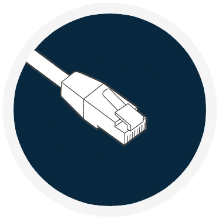
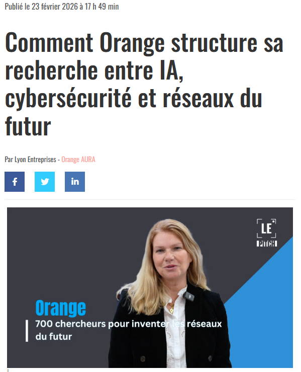
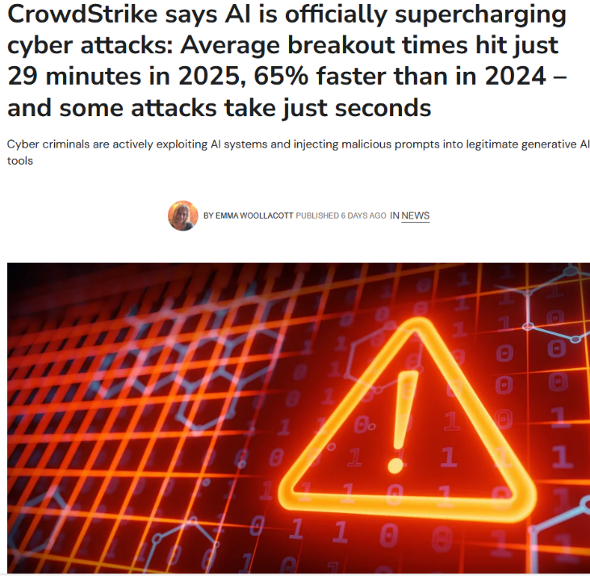

L’intelligence artificielle (IA) occupe une place de plus en plus importante dans le domaine de la cybersécurité. Face à l’augmentation des cyberattaques, les entreprises utilisent des solutions basées sur l’IA pour détecter, analyser et répondre aux menaces de manière automatisée et plus rapide que les méthodes traditionnelles.
L’IA permet d’analyser de grandes quantités de données en temps réel afin d’identifier des comportements suspects, détecter des anomalies et anticiper des attaques.
Cette veille me permet de mieux comprendre l’évolution des menaces et l’impact de l’intelligence artificielle sur les stratégies de défense. Elle complète mes compétences en cybersécurité.
Selon le CrowdStrike Global Threat Report 2026, les attaques utilisant l’intelligence artificielle ont augmenté de 89 %. Le temps moyen de propagation dans un réseau est passé à 29 minutes.
Source : Euronews
Un rapport de Thales montre que 66 % des entreprises ne savent pas localiser précisément leurs données. L’IA modifie la surface d’attaque et nécessite une meilleure gouvernance des accès, du chiffrement et de la classification des données.
Source : Lyon Entreprises
La cybersécurité reste la priorité des organisations en 2026. L’intégration de l’IA dans les stratégies de défense devient indispensable face aux attaques ciblant les infrastructures critiques.
Source : IT Pro